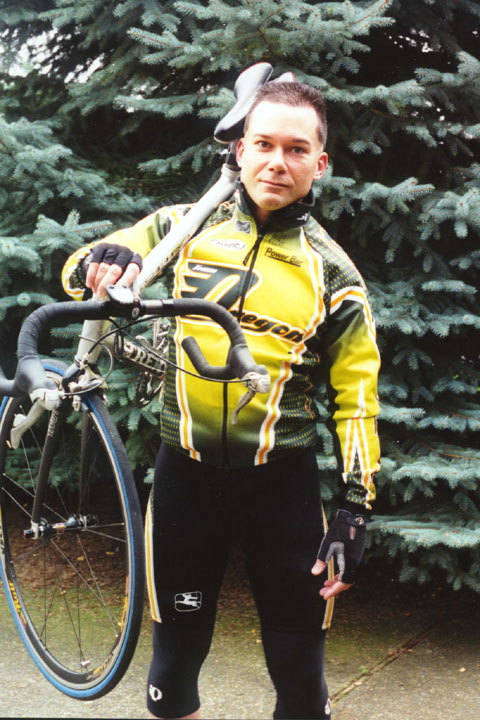

About Mark

Mark is a former amateur bike racer and triathlete. He started racing at 37, focusing on road races and later began racing sprint triathlons. Mark is an engineer who recently transitioned into full-time software development, and he created Velo Portal as a project to enhance his web development skills.
Mark lives in Portland, OR with his wife, their twin son and daughter, and their dog Shadow.